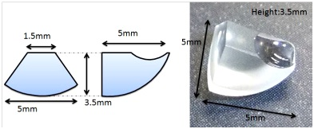
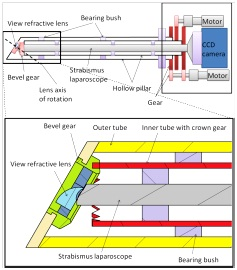
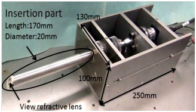
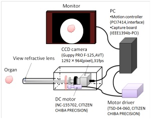
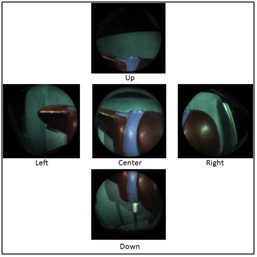
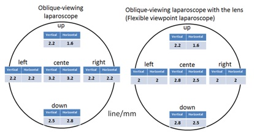
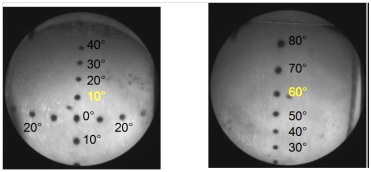
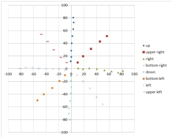

|
Development and fundamental evaluation of a flexible viewpoint laparoscope using an oblique-viewing laparoscope Abstract We have developed a new type of laparoscope with a flexible viewpoint. This system allows the view to be moved without moving the laparoscope itself. To achieve a wide range of view movements, we used a commercial 30° oblique-viewing laparoscope and a special lens. The system allows the view to be independently controlled by motorized rotation of the oblique-viewing laparoscope and a sleeve attached to the special lens. From the results of the evaluation experiments, we confirmed that the laparoscope, which has a 70° viewing angle, allowed the view to be moved ±60°. In image quality evaluation experiments, the degradation of the image quality was low. The positioning accuracy was 2.4±1.7 mm, and the repeatability was 0.48 mm, which led to precise view control. The system allowed the safe and smooth manipulation of the laparoscopic view. Introduction Recently, laparoscopic surgery has become popular as a minimally invasive surgical technique. In this surgery, a laparoscope should be moved to change the operating scene. A rigid-type laparoscope should be rotated around the insertion point, and a flexible-type laparoscope should bend at its tip to change the view. However, these movements require sufficient moving area inside the body, and therefore it is difficult to change the scene in narrow space and also creates the risk of striking an organ. From this background, we have developed a new type of laparoscope with a flexible viewpoint that has a wider-moving view range. Here, we describe its design, the development of the prototype, and the results of fundamental evaluation experiments. Materials and Methods A.
View-moving mechanism To achieve a wide view movement, we used a 30° oblique-viewing laparoscope and incorporated a special lens into the tip of the laparoscope that bends the view to 30°. The oblique-viewing endoscope and the special lens are independently rotated by motors. Because of the combination of the rotation angle of the laparoscope and lens, the surgeon can move the view to the desired direction. Here we explain the lens design. Using the ray-tracing method, we determined the curvature of the lens surface necessary to refract all light to 30°. We also approximated this curved surface by a spherical surface. Figure 1 shows the lens we designed. Figure 2 shows the total design of the laparoscope with a flexible viewpoint. To move the view in the desired direction, the oblique-viewing laparoscope and the special lens are independently rotated by motors. One motor is set at the end of the endoscope and is rotated via gears. The other motor rotates a stainless sleeve and rotates the lens via a 30° inclined bevel gear because the lens should be rotated around the 30° inclined optical axis of the oblique laparoscope. The diameter and length of the sleeve were 20 mm and 170 mm, respectively. The size of the motor box was 250 × 130 × 100 mm3. 
Figure 1. View of the designed lens  Figure 2. Mechanical design of the flexible viewpoint laparoscope( left : design, right : picture) B.
System
configuration Figure 3 shows the system configuration. The position of the view is determined by the rotation angle of the lens and the oblique-viewing laparoscope. Its relationship is calculated according to Snell’s law. The surgeon inputs the desired direction (up, down, right, or left), and then the computer calculates the rotation angle to perform its movement. The movement of the view from the center to the corner required 6 s. Figure 4 shows the center and side views of the laparoscope. 
 Result A.
Image quality
evaluation experiment A resolution chart was
placed 50 mm in
front of the laparoscope. We measured the minimum line width that could
be
observed in the center view by the oblique-viewing laparoscope with and
without
the special lens. The measurements were performed at the center, up,
down,
right and left part in a view.
Fig 5 shows the results. Decrease
in the proportion of the resolution due to the lens was 93% on average.

Figure 5. Minimum line width that can be observed by the oblique-viewing laparoscope with and without the special lens (mm) B.
Moving view
range We designed the laparoscope to allow the view to be moved ±60° using the 30° oblique- viewing laparoscope and the special lens to bend the view to 30°. In this experiment, we confirmed the moving view range of our prototype. A sphere with a radius of 75 mm was placed in front of the laparoscope. A scale having increments of 10° was drawn inside the sphere. The tip of the laparoscope was placed at the center of the sphere. We measured the center position when the center and upper views were observed. As a result, the moving range of the view ranged from 10° to 60° (Fig. 6). Using the same method, we measured the moving view range in the down, right, and left directions. As a result, the moving range of the views was from 10° to 60° in all directions.  Figure 6. Center view (left) and upper view (right) C. Positioning accuracy A cross section of a paper was placed 50 mm in front of the laparoscope, and we moved the view from 0 to 80 mm with increments of 10 mm in eight directions. We then measured the positional accuracy of the view. The results are shown in Fig. 7. The positioning error was 2.4 ± 1.7 mm at every position. The average repeatability of each position was 0.48 mm.  Figure
7. Results for the positioning accuracy of the view when the view is
moved in
eight directions Conclusions We also performed an in vivo experiment as shown in Fig.6 using an anesthetized swine weighing about 45kg for evaluating the validity and usefulness of our method. In vivo experiment was approved by the University of Tokyo Committee on Animal Resources. Local epicardial electrograms for ventricular area were measured and recorded, while optical markers and electrode array were being tracked. References
|

|
Contact us Japanese | English |
» TOP » Research » Practical application and establishment of evaluation method of new surgical system |